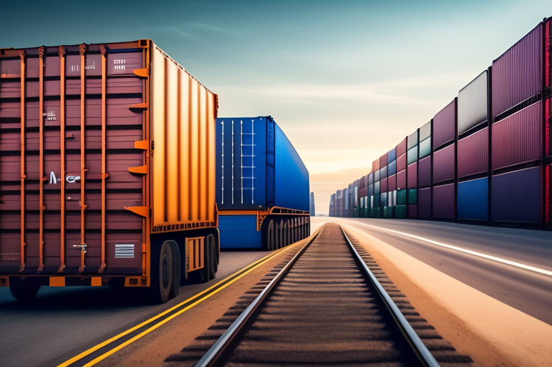

The Impact of E-commerce on Logistics
INTRODUCTION
The rapid rise of e-commerce has significantly impacted
the logistics industry, driving the need for faster
deliveries, efficient warehousing and fulfillment
solutions, adherence to specific packaging and
labeling requirements, real-time tracking and visibility,
and optimized last-mile delivery operations. Liveasy,
a leading logistics provider, understands the evolving
demands of e-commerce businesses and has adapted
its services to cater to these requirements. In this
blog, we will explore the impact of e-commerce on
logistics and how Liveasy addresses these challenges
to optimize the supply chain for e-commerce
businesses. From expedited deliveries to last-mile
solutions, Liveasy ensures efficient and reliable
logistics operations to meet the growing demands
of the e-commerce industry.
CONTENT
E-commerce has revolutionized the way we shop,
with consumers now enjoying the convenience of
online purchases from the comfort of their own
homes. As the e-commerce industry continues to
grow rapidly, it has significant implications for the
logistics sector. Liveasy, a leading logistics company,
is at the forefront of navigating these changes to
meet the evolving needs of the e-commerce industry.
1. INCREASED DEMAND FOR FAST AND EFFICIENT DELIVERIES
The rise of e-commerce has fueled the demand for faster
and more efficient deliveries. Liveasy understands the
importance of meeting the expectations of e-commerce
customers and has adapted its services to provide
expedited delivery options. By leveraging its extensive
network of truckers and optimizing its delivery routes,
Liveasy ensures that shipments reach customers on
time, meeting the growing demand for fast and
reliable deliveries.
2. GROWING NEED FOR WAREHOUSING AND FULLFILLMENT SOLUTIONS
E-commerce businesses require efficient warehousing
and fulfillment solutions to manage their inventory
and fulfill customer orders. Liveasy recognizes this
need and offers comprehensive warehousing and
fulfillment services. With state-of-the-art warehousing
facilities and streamlined fulfillment processes,
Liveasy helps e-commerce businesses optimize their
supply chain operations, ensuring timely order
fulfillment and customer satisfaction.

3. CHANGING PACKAGING AND LABELLING REQUIREMENTS
E-commerce orders often require specific packaging
and labeling requirements to ensure that products are
protected during transit and reach customers in
good condition. Liveasy understands the importance
of adhering to these requirements and works closely
with its truckers and shippers to ensure proper
packaging and labeling for e-commerce shipments.
By following industry best practices for packaging
and labeling, Liveasy ensures that shipments are
handled with care and reach their destination in
optimal condition.
4. INCREASED EMPHASIS ON REAL-TIME TRACKING AND VISIBILITY
E-commerce customers expect real-time tracking and
visibility of their shipments. Liveasy has invested in
advanced technology solutions, including AI-powered
tracking and mobile apps, to provide real-time visibility
of shipments. Customers can track their orders
throughout the entire delivery process, from pickup
to delivery, ensuring transparency and peace of mind.
Liveasy's technology-driven approach enhances the
overall customer experience and builds trust in the
logistics process.
5. SHIFT TOWARDS LAST-MILE DELIVERY SOLUTIONS
Last-mile delivery, the final leg of the delivery process
from the fulfillment center to the customer's doorstep,
has become a critical aspect of e-commerce logistics.
Liveasy has optimized its last-mile delivery operations
to ensure faster and more efficient deliveries. By
leveraging its extensive network of truckers and
innovative technology solutions, Liveasy streamlines
its last-mile delivery process, minimizing delays and
ensuring prompt delivery to end customers. Liveasy's
customer-centric approach to last-mile delivery
ensures that e-commerce businesses can provide
a seamless and reliable delivery experience to their
customers.
CONCLUSION
As the e-commerce industry continues to grow and
evolve, Liveasy recognizes the impact it has on logistics
and has adapted its services to meet the changing needs
of e-commerce businesses. By providing fast and
efficient deliveries, offering comprehensive warehousing
and fulfillment solutions, adhering to packaging and
labeling requirements, providing real-time tracking
and visibility, and optimizing last-mile delivery
operations, Liveasy is well-prepared to cater to the
unique logistics requirements of the e-commerce
industry. Contact Liveasy today to experience its
reliable and efficient logistics solutions tailored for
the e-commerce industry.